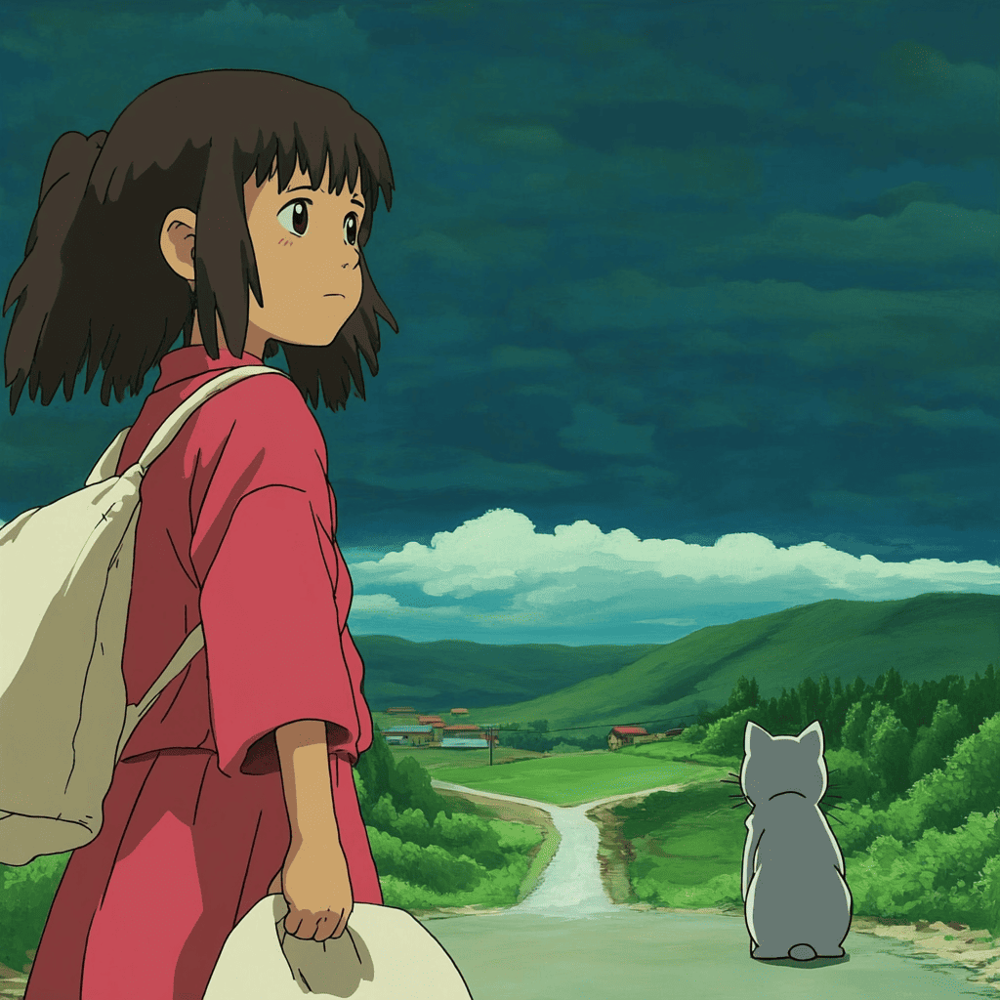

Фритрек и нулевой спринт: Подготовка к работе

Начало
Это было самое начало пути. На этом этапе важно было проникнуться основами и настроиться на учёбу. И, возможно, подумать, как новые знания могут повлиять на ваше будущее.
Начинать с нуля всегда трудно, особенно если до недавнего времени ты не связывал себя с этой профессией.